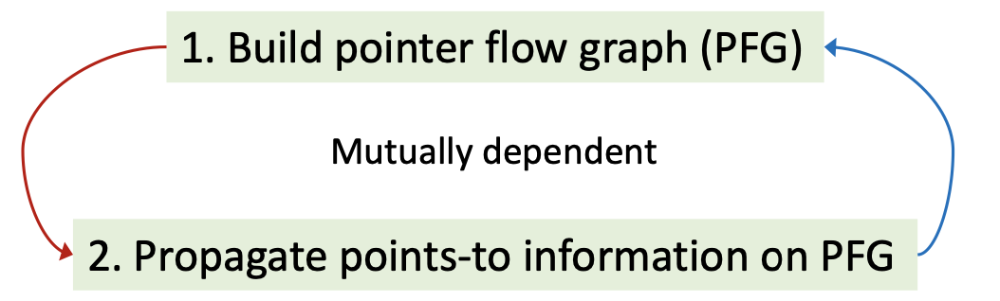

Abstract
过程间分析需要基于程序的
Call Graph来完成。由于CHA Analysis过度追求速度造成误报——而false positive对于常量传播这样的must分析来说是不可接受的。因此指针分析在POPL'1980被第一次提出Interprocedural Data Flow Analysis in the Presence of Pointers, Procedure Variables, and Label Variables。Pointer Analysis computes an over-approximation of the set of which memory-locations(objects) a pointer can point to.
指针分析除了可以构建
Call Graph等程序基本信息之外，还可以用于编译优化，程序鲁棒性和安全等各个领域，是最基础的静态分析算法之一——比如流行的别名分析Alias Analysis就是从指针分析中派生出来的:Alias information can be derived from points-to relations.在指针分析的输出指向关系中是否有两个指针可以指向同一个对象。
Introduction
指针分析是一种
may分析，输入时整个程序，分析结果的输出是类似于map的一系列指向关系Points-to relations。
KeyFactors
作为一项比较复杂的技术，指针分析框架的精度和速度取决于四个很主要的因素：
Factor Problem Choice Heap abtraction How to model heap memory? Allocation-site/Storeless Context sensitivity How to model calling contexts? Context-sensitive/Context-insensitive Flow sensitivity How to model control flow? Flow-sensitive/Flow-insensitive Analysis scope Which parts of program should be analyzed? Whole-program/Demand-driven Heap Abstraction
如何抽象堆操作，比如循环和递归会在动态运行时创建很多的堆对象，如何将这些
unbounded的操作进一步简化抽象成finite的静态分析对象。
学术界有两个流派来完成堆抽象：
Store based model和Storeless model。本节课介绍第一个流派下面的Allocation sites方法来对所有堆对象完成建模——One abstract object per allocation site。即每一个分配点new的堆对象都抽象到一个object中。Context Sensitivity
在函数调用的时候会产生上下文
context。一个method被调用多次的话如何对每一次的上下文进行抽象。关于上下文抽象也有两种流派:
Context-sensitive: 对每一次调用都区别对待，具体调用具体分析Context-insensitive: 对一个method的所有调用都merge到一起，一次性处理上下文敏感是提高静态分析效率非常有效的工具之一，是这门课需要讨论的重点。
Flow Sensitivity
如何对控制流抽象，也有两种流派：
Flow-sensitive: 确保程序的执行顺序execution order，维护每一个程序点的points-to relations表Flow-insensitive:忽略执行顺序，维护整个程序的指向表目前学术界还没有直接研究表明
flow sensitivity相比于flow insensitivity对Java这样的OOP语言会有多少优势。Analysis Scope
在进行指针分析的时候，如何选取需要分析的程序段？
- Whole-program
- Demand-driven
是直接分析整套程序还是以需求为驱动进行特定程序片段的分析。实际上如果需求很多的话，单独分析的复杂度和直接进行整套程序分析的复杂度不相上下。
Concerned Statements
上述的
Key Factors是具有全局性质的-即针对整个指针算法框架，那在实现上-即针对Java编程语言的具体指针分析框架来说，更细粒度的Concerned Statements会是什么呢？Pointers in Java
首先需要总结一下
Java中所有可以用作指针的声明。
Local variable：xStatic field: C.fInstance field: x.fArray element: array[i]共有4中具体的指针类型——
static field是一种全局变量。数组元素在分析时可以忽略掉索引，看成是可以指向任何数组元素field的指针类型array.arr，因此也被看成是一种Instance field。综上来看，针对Java语言的指针分析主要处理Local variable和instance field两种指针类型。Pointer-Affecting Statements
明确了指针分析研究对象
Pointers的具体类型之后，继续思考全程序的指针分析如何更具体的完成实现？就语句本身来说例如if/for/break这样的控制流并不会对指针分析的结果造成影，我们需要关注真正的pointer-affecting statements如下：
New: x = new T()Assign: x = yStore: x.f = yLoad: y = x.fCall: r = x.k(a, ...)重点关注virtual calls


Foundations
Rules
Domains and Notations
指针分析是一种以指向关系作为传递信息的数据流分析。所以其理论也需要引入域和某些符号解释：
- Variable: x, y ∊ V
- Fields: f,g ∊ F
- Objects: oi,oj ∊ O (Allocation sites)
- Instance fields: oi.f, oj.g ∊ O⨉F
- Pointers: Pointer = V⋃(O⨉F)
其中Variable表示程序中的所有变量指针类型。Object和Fields分别指的是程序中分配堆对象的创建点和抽象堆对象中的域——对象和域组合起来的Instance Fields也表示程序中一种指针。Pointers指的是程序中所有的
variable和instance field——V ⋃ (O x F)。最后引入指向关系
pt(其本身就是一种映射， 代表指针可能指向的对象的集合)：
- Points-to relations:
pt: Pointer ⟶ 𝓟(O)
𝓟(O)表示对象O的powersetpt(p)表示指针p的指向关系集合理解上，指针指向对象——指针p的值域就是
V ⋃ (O x F)，对象o的值域就是𝓟(allocation sites)。p⟶o ≡ o∊pt(p)即指针p指向对象o等价于对象o属于指针p的指向关系集合。在此基础上，引入如何处理
Pointer-Affecting Statements的形式化Rules：
分数上面是前提
premise而下面是结论conclusion。
New:
New规则中的oi 表示一个Allocation site在这一点创建出来的对象，那么指针分析如何处理一个New语句——即执行完这条语句后让x指向oi即oi ∊ pt(x)。Assign: 如果oi属于y的指向集，那在执行完这条语句后oi则需要加入到x的指向集中。
Store: 将新对象保存到该对象的一个域f——如果x指向oi而y指向oj，那执行完这条语句之后oi.f需要指向oj。
Load: 将某个对象的域f加载到新对象中——如果x指向oi而oi的域f指向oj，那执行完后将oj加入到y的指针集当中。

How to Implement Pointer Analysis
在确定好Domain和Rules之后开始明确如何实现全程序的指针分析算法。
Essentially，pointer analysis is to propagate points-to information among pointers(variables & fields).
在两种指针(
variable和fields)之间根据Pointer-Affecting Statements建立和传递指向关系points-to。从另一个角度来说指针分析就是在解决指针之间的inclusion constraints即对于x = y语句指针x一定包含指针y的所有指向信息。而关键的是当pt(x)更新时，这些改变也需要传递给x的其他相关指针。而在实现上，我们用
Graph来连接相关联的指针，当pt(x)更新时，将更新的数据流（数据流分析根据Domain不同而不同，指向关系也是一种数据流信息）传递给x的后继元素，这个图就是Pointer Flow Graph。Pointer Flow Graph(PFG)
一个程序的
PFG是一种表示points-to信息如何在pointers之间流动的有向图，图中的节点代表了V ⋃ (O ⨉ F)——变量或者抽象对象(因为PFG是静态分析建立的，所以是抽象的堆对象)的域，边代表了对象在指针之间的流动关系Pointer ⨉ Pointer——比如x⟶y代表了指针x的指向对象集合可能(指针分析是may分析)会流动到y的指向集合。PFG中的节点就是程序中的各种指针，而边是根据指针分析的Rules建立的。
有了PFG，指针分析问题就可以看成是在PFG上求其传递闭包的问题，比如PFG中a点到b点是可达的，那a中的数据流信息就可以直接流到b节点上。
综上，指针分析的思路主要有两部分：创建PFG——>在PFG上传递指向信息。而难点在于这两者是互相依赖的。为什么创建PFG也会依赖指向信息呢？

因为在处理
instance fields的指向关系的时候，前提是需要知道这些field的object的指向信息——由allocation sites更新得到。因此PFG本身也是随着指针分析的过程动态更新的。
Algorithm
本节具体实现数据流分析算法，首先是使用到的数据结构：
S: 输入程序的语句集合WL: work list存储了需要处理的指向关系pair，其中每一项<n,𝓟(O)>*意味着在𝓟(O)中的信息需要传递给n的指向关系集合pt(n)中，用PFG: 有向图，表示成为边的集合，其中s⟶t表示s的指向关系流向t的指向关系Hybrid-Set: 用来存在pt(s)，即当元素小于16时用HashSet大于16时用BitVectorMain Algorithm
2
3
4
5
6
7
8
9
10
11
12
13
14
15
16
17
18
19
20
21
22
23
24
25
26
27
28
29
30
31
32
33
34
> WL = [], PFG = {}
> foreach i: x=new T() ∊ S do //处理New语句
> add <x, {O_i}> to WL
>
> foreach x=y ∊ S do //处理Assign语句
> AddEdge(y, x)
>
> while WL is not empty do
> remove <n, pts> from WL
> 𝚫 = pts - pt(n)
> Propagate(n, 𝚫)
> if n represents a variable x then
> foreach o_i ∊ 𝚫 do
> foreach x.f=y ∊ S do
> AddEdge(y, o_i.f) //处理Store语句
> foreach y=x.f ∊ S do
> AddEdge(o_i.f, y) //处理Load语句
> }
>
> AddEdge(s, t) { //构建PFG
> if s⟶t ∉ PFG then
> add s⟶t to PFG
> if pt(s) is not empty then
> add <t, pt(s)> to WL
> }
>
> Propagate(n, pts) { //更新pt(x)
> if pts is not empty then
> pt(n) ⋃= pts //核心： 传递数据流
> foreach n⟶s ∊ PFG do
> add <s, pts> to WL
> }
>
AddEdge
首先每一条
New语句生成一条指向关系完成对WL的初始化。这套算法的输入语句S是流不敏感insensitive的，即处理过程不会关注语句顺序。
AddEdge函数主要是通过处理Assign语句构建PFG。每一条s⟶t都对应着图上一条边，根据指针分析的inclusion constraints原理将<t, pt(s)>加入WL中实现把指针s的指向集合加到指针t中。Propagate
在构建完最基础的的
PFG之后，算法进入While循环开始迭代处理WL中的指向关系。取出一项<n, pts>，过滤掉指针s指向关系中指针n已经存在的抽象对象即𝚫=pts-pt(n)——主要是为了避免更多的冗余操作已达到Differential Propagation然后开始
Propagate函数，这个函数是真正修改了指针的指向关系即完成数据流的传递，换句话讲指针分析的过程就是在迭代过程中不断向pts中加入新的数据流。而进入到函数内的𝚫是真正需要传递给n的指向集合，接着又根据inclusion constraints需要把指针n刚更新过的指向集合加到其在PFG上的后继中，故遍历整个图找到所有的后继节点s并把<s, pts>加到WL中等待下一轮更新。Differential Propagation
查分传播是为了避免处理冗余的指针信息。这是因为在
PFG上任意点的指向集合信息pt(n)一定已经传播到了其后继元素，没有必要在传播一次。在整个算法中一共有两处查分传播，分别是在𝚫=pts-pt(n)语句以及处理Store/Load语句的代码片段foreach O_i ∊ 𝚫 do。首先
Store/Load语句映射到PFG上的操作正好相反：
Store：x.f=yoi.f ⟵ yLoad: y=x.fy⟵ oi.f关键是需要知道指针
x指向的抽象对象o_i然后继续操作。而foreach o_i∊𝚫 do正好清除掉指针x以前的指向信息而保留了这次迭代中新加入的抽象对象。
就
Store/Load语句本身而言也是通过AddEdge的方式来更新PFG的，但这里要注意的是因为有可能两个变量会指向相同的抽象对象oi，即虽然oi对于x来说是新加入的指向信息，但是有可能在前几次迭代中有z.f=y中的指针z也指向抽象对象oi，即因为指针oi.f中oi是一个对象——有可能会被多个指针指向，因此这里的AddEdge操作不能保证一定会引入新的PFG边。Fixed Point
算法符合不动点原理——
WL的功能就是向pt中添加信息，而核心pt(n) ⋃ =pts之后如果直接检查合并前后pt集合是否有变化也以判断达到不动点。

How To Deal With Method Calls
全程序的指针分析算法还需要处理方法调用。和所有过程间分析一样，
Inter-procedural pointer analysis也需要建立call graph。不过相比于CHA analysis仅仅通过receiver object的声明类型来构建调用图不同，指针分析还使用指向信息points-to relations来使得call graph的构建更加精确。比如void foo(A a) {... b = a.bar();...}中points-to relations和Call Graph都是在指针分析的过程中动态更新的，比如想要建立pt(a)需要知道函数foo的调用边，而如果想要给a.bar()建立调用边则也需要pt(a)，这种方法被称为on-the-fly call graph construction。
CHA: 基于a声明类型解析call targetspointer analysis: 基于pt(a)解析call targetsRule: Call
首先引入指针分析处理方法调用Rules的形式化描述：
指针分析器在遇到了
r = x.k(a1, ...)调用语句的时候，肯定会模拟编译器的运行时行为并解析：
- oi∊pt(x),m=Dispatch(oi,k) ⟶ oi∊pt(mthis)，其中x是
caller变量- ou∊pt(aj) ⟶ ou∊pt(mpj)，其中aj是形参
- ov∊pt(mret)⟶ov∊pt(mr)，其中mret是返回值
为了解释的更清楚，下面对规则进行了进一步的解释：
- 根据
pt(x)得到被调用方法k的receiver object即oi，然后调用Dispatch(O_i, k)解析出target method即m
- 将目标函数
m的this指针指向变量x实际指向的对象即oi- 将形参
m_pj的指针指向实参变量指向的对象集合pt(aj)，并将形参变量和对应实参变量之间加上PFG边(a1⟶m_pj)- 将调用语句的
LHS指向目标函数m的返回值变量指向的对象结婚m_ret，并将这两个变量之间加上PFG的边(r⟵mret)主要需要关注的是
receiver object，target method，arguments和return value。
而这里对形参和实参之间，返回值和左值之间连上
PFG的边而没有给目标方法和调用者之间加边的原因是因为caller变量x有可能有多个指向对象pt(x)，而对于Dispatch函数来说，只要receiver object确定那target method也是确定的。如果我们需要保证OOP语言中所有函数的this指针都指向唯一正确的receiver object即oi，前提就是保证不能让其他虚假的pt(x)信息直接流入this指针——如果贸然给x和目标方法的this指针之间加上PFG只会导致引入虚假spurious信息。Algorithm
在过程间指针分析中，调用图的构建和指向关系的构建都是同步动态更新的，引入
reachable可达的概念：即从main函数开始，将真正调用到的函数依次纳入可达方法集合中，所有的分析只从这些集合中完成。首先介绍算法中使用到的数据结构：
S: 可达语句reachable statements的集合S_m: 函数m中的语句集合RM: 可达函数集合CG: 调用边Call Graph集合
2
3
4
5
6
7
8
9
10
11
12
13
14
15
16
17
18
19
20
21
22
23
24
25
26
27
28
29
30
31
32
33
34
35
36
37
38
39
40
> WL = {}, PFG = {}, RM = {}, CG = {}
> AddReachable(m_entry)
> while(WL is not empty) {
> remove <n, pts> from WL
> 𝚫 = pts - pt(n)
> Propagate(n, 𝚫)
> if n represents a variable x {
> foreach o_i∊𝚫 do
> foreach x.f=y∊S do
> AddEdge(y, o_i.f)
> foreach y=x.f∊S do
> AddEdge(o_i.f, y)
> ProcessCall(x, o_i)
> }
> }
> }
>
> AddReachable(m) {
> if m∉RM then
> add m to RM
> S ⋃= S_m
> foreach i:x=new T()∊S_m do
> add <x, {o_i}> toWL
> foreach x=y∊S_m do
> AddEdge(y, x)
> }
>
> ProcessCall(x, o_i) {
> foreach l:r=x.k(a1,...an)∊S do
> m = Dispatch(o_i,k)
> add <m_this,{o_i}> to WL
> if l⟶m∉CG then
> add l⟶m to CG
> AddReachable(m)
> foreach parameter p_i of m do
> AddEdge(a_i, p_i)
> AddEdge(m_ret, r)
> }
>

AddReachable
这个函数的功能就是将被调用的方法加入
RM，并将对应的语句加入到S中。AddReachable函数在整个算法一共两个地方被调用——一个是初始化将main函数首先加入，其次就是在每一次有新的Call Graph edge被创建的时候。函数本身还需要处理当前Reachable Method中的New/Assign语句。这是因为Load/Store/Call语句的分析都是根据指向信息的变化（比如x.f=y如果x又指向了一个新对象）来更新处理的，但是New/Assign不需要任何信息就可以独立完成分析。这也是Differential的目的。ProcessCall
该函数处理方法调用的
Rules。整个函数执行的前提就是该函数的receiver object即x有新的指向关系oi,j,k...被加入到𝚫时，这两个参数被传入到函数中开始执行。首先使用
Dispatch函数解析出来target method即m变量。通过把<mthis,{oi}>加入到WL中来完成将目标函数m的this指针指向变量x实际指向对象即oi。接下来添加
Call Graph，这里之所以要有if语句判断该条调用边存在性即Differential，是因为有可能之前有和oi相同类型的对象oj已经触发了ProcessCall函数执行并加上调用边——因为整个While循环继续执行的前提就是pt(x)被更新，那更新前后的oi,j,k...完全有可能是同一个类型。添加完调用边之后，最后添加参数和返回值。整个算法的输出是
Points-to relations和Call Graph。至此上下文不敏感的全程序指针分析算法就介绍完了。
Context Sensitivity
上下文敏感是提升指针分析精度（尤其是针对
Java语言的指针分析）最有效的技术，也是指针分析领域近年来研究的热点。Introduction
在程序动态运行的过程中，一个
method可能会在不同的context下被调用多次。而在不同的上下文中method的指针可能会指向不同的object。Context Insensitivity .aka. C.I.导致这些不同上下文的objects通过返回值都被传递到程序的其他分支中进而产生虚假数据流信息。比如程序中：
2
3
4
5
6
7
> y = id(n2);
> int i = x.get();
> Number id(Number n) {
> return n;
> }
>
因为函数
id被调用两次，故形式参数n被传入两条PFG边——分别是实参n1和n2，而这两个指针对象又分别指向不同的oi和oj，导致返回值n的指向关系集合pt(n)里增加了oi和oj。而n和x,y又各自连着PFG故导致pt(x)/pt(y)的指向关系也是oi和oj——如果是过程间的常量传播则最终分析的结果就是x/y = NAC，很明显丧失了精度。Context sensitivity models calling contextx by distinguishing different data flows of different contextx to improve precision.
下面讨论开展上下文敏感的指针分析算法所需要考虑的几个方面：
Call-site sensitivity
Context sensitivity .aka. C.S.用来区别不同上下文的方式中最常见的是call-site sensitivity——每一个上下文都抽象成本次方法调用的动态运行时调用栈即一系列call-sites组成的列表(随着调用层次深入c的长度会增加，区别于用l行号代表当前调用点)，比如上面一段代码中的id方法共有两个context分别是[1]和[2]。从实现的角度来看，Cloning-Based Context Sensitivity是实现C.S.最直接的方式——同一个method的多次调用都根据各自的context区分成不同的Cloning-Based版本，method中的调用也随着各自的Cloning-Based区分出来——one clone per context。
Context-Sensitive Heap
从更细粒度的角度看，OOP是
heap-intensive的语言——所有的对象都是建立在堆区by new。在实际设计中，上下文敏感的指针分析算法还需要考虑到堆敏感的问题——这是因为所有的语句其实都有自己的作用域，OOP的作用域就是函数。创建新对象的new语句就是一个allocation site，而当new语句出现在一个函数中恰巧该函数又被多次调用的时候，同一个allocation site会在不同的上下文背景下建立各自的对象，所以同一个方法中的堆对象也需要根据不同的heap context来进行区分。最直接的方式就是直接继承其所在method的上下文并从更加细粒度的角度处理指针分析算法：Rules
下面引入上下文敏感指针分析的
Rules：Domains and Notations
在上下文敏感分析中，程序中的所有元素（变量，方法，对象）都加上了上下文。首先引入上下文的集合
C,
- c,c',c'' ∊ C
而程序中的方法，变量和对象都和
context做了product：
- Context-sensitive methods: c:m ∊ C x M
- Context-sensitive variables: c:x, c':y ∊ C x V
- Context-sensitive objects: c:oi, c':oj ∊ C x O
- Fields: f, g ∊ F
- Instance fields: c:oi.f, c':oj.g ∊ C x O x F
最后，引入这些程序中的两种上下文敏感的指针类型：
- Context-sensitive pointers: CSPointer = (C x V) ⋃ (C x O x F)
以及指向关系集合：
- Points-to relations: pt: CSPointer ⟶ 𝓟(C x O)
Regular Rules
这些规则和之前针对
Java语言的数据流分析框架规则基本一样，只是元素都加上了不同的上下文以区分，重点需要关注这些语句中的指针变量和堆对象是否都在同一个context中：
new语句中x和分配的堆对象oi同属于一个上下文，那是因为指针变量的初始化堆内存一定是在一个作用域中。assign语句中会发现只有x = y是在一个context中，而其两个指针变量共同指向的堆内存部分pt(y)却共同在另一个context中这是因为有参数传递的可能。Store/Load语句中x和y在同一个上下文中但是它们的指向对象却分别在不同的context下。Call Rule
上下文敏感的规则中最重要的就是
Call规则，它主导并传递了不同的数据流使得精度提升成为可能。假设用
c代表当前所在方法也就是调用者Caller的上下文，而用ct代表被调用者Callee的上下文。首先得到指针变量x的receiver object即oi，该堆对象有可能是在不同的上下文中因此和其指针的上下文不同。其次使用oi 和方法签名k作为参数，Dispatch出真正的target method。最后使用和call-site相关的信息：call-site，当前上下文c以及所指向的堆对象c':o_i作为参数使用函数Select来取得该target method的上下文ct。需要注意的就是oi,j,k... = pt(x)<中的oi,j,k...和x两者之间的上下文是没有直接关系的，所以严格讲这两个的c都应该是不同的。
这时候基本上所有
Cloning-Based的程序元素都取得了，就和上下文不敏感指针分析处理Call的规则基本一致。Algorithm
上下文敏感的算法和上下文不敏感的指针分析算法整体上框架是一样的。构建上下文敏感的指针流图并通过PFG with C.S.传递指向信息。只是这些PFG的节点和边为了更高的精度被加上了新的约束——上下文信息，从而变成了
context-sensitive variable/abstract object的指针类型。
Node: CSPointer = (C x V) ⋃ (C x O x F)Edges:CSPointer x CSPointerPFG中的每一个节点都被上下文
c区分开，每一条边都有了更细粒度的解释：
x = y: c:x ⟵ c:yx.f = y: c':oi.f ⟵ c:yy = x.f: c:y ⟵ c':oi.f下面就是上下文敏感的算法：
2
3
4
5
6
7
8
9
10
11
12
13
14
15
16
17
18
19
20
21
22
23
24
25
26
27
28
29
30
31
32
33
34
35
36
37
38
39
> WL={}, PFG={}, S={}, RM={}, CG={}
> AddReachable([]:m_entry) //上下文敏感函数
> while WL is not empty do
> remove <n, pts> from WL
> 𝚫 = pts - pt(n)
> Propagate(n, 𝚫)
> if n represents a variable c:x then //上下文敏感的指针变量
> foreach c':o_i ∊ 𝚫 do //上下文敏感的堆对象
> foreach x.f = y ∊ S do
> AddEdge(c:y, c':o_i.f) //对上下文敏感的指针和堆对象加PFG边
> foreach y = x.f ∊ S do
> AddEdge(c':o_i.f, c:y)
> ProcessCall(c:x, c':o_i) //处理上下文敏感的方法调用
> }
>
> AddReachable(c:m) {
> if c:m ∉ RM then
> add c:m to RM
> S ⋃= S_m
> foreach i:x = new T() ∊ S_m do
> add<c:x, {c:o_i}> to WL //修改PFG
> foreach x = y ∊ S_m do
> AddEdge(c:y, c:x)
> }
>
> ProcessCall(c:x, c':o_i){
> foreach l: r = x.k(a1, ..., an)∊S do
> m = Dispatch(o_i, k)
> ct = Select(c, l, c':o_i) // 核心： 选择target method的上下文ct
> add <ct:m_this, {c':o_i}> to WL //this指针和堆对象加PFG
> if c:l ⟶ ct:m to CG //添加调用边
> add c:l ⟶ ct:m to CG
> AddReachable(ct:m)
> foreach parameter p_i of m do //处理参数
> AddEdge(c:a_i, ct:p_i)
> AddEdge(ct:m_ret, c:r) //处理返回值
> }
>


Variants
上述算法中引入了一个新的函数
Select(c, l, c':o_i)——在caller函数中利用相关信息获取当前callee的上下文。该信息包括调用者上下文caller context，调用点call-ste，堆上下文敏感的对象receiver object with heap context。介绍三个版本的
Select函数。Call-site sensitivity
该版本的
context由一系列call-site（在代码中由行号来表示）组成的列表。callee-context是在每次调用点将当前的行号append到caller-context上——本质上是在模拟调用栈：
- Select(c, l, ...) = [l', ..., l'', l], where c = [l', ..., l'']
这个列表的长度可以规定，故又称为
k-CFA。而这种抽象在递归程序中会导致出现无数个callee-context,又比如在实际工程项目中调用栈很深的情况下上下文过于冗长：
2
3
4
5
6
7
8
9
10
11
12
13
14
15
16
17
18
> ...
> a.foo();
> ...
> }
>
> void foo() { //context:[3]
> ...
> b.bar();
> ...
> }
>
> void bar(){ //Context:[3,9], [3,9,15], [3,9,15,15...] 无数个
> ...
> bar();
> ...
> }
>
k-Limiting Context通过对上下文的长度进行了限制保证了不会过度增长。一般情况下长度≤3。而且method context和heap context使用不同的长度保证不会互相有影响。Object sensitivity
该版本的
context是由一系列抽象对象abstract objects（由其allocations site表示）组成的。
- Select(,,c':oi) = [oj,...,ok,oi] where c'=[oj,...,ok]
这里一个有意思的点就是不管是
Object还是Call-site都有自己的局限性：
2
3
4
5
6
7
8
9
10
11
12
13
14
15
16
17
18
19
20
> B f;
> void set(B b){
> this.doSet(b);
> }
> void doSet(B p){
> this.f = p;
> }
> B get(){
> return this.f;
> }
> }
> a1 = new A();
> a2 = new A();
> b1 = new B();
> b2 = new B();
> a1.set(b1);
> a2.set(b2);
> x = a1.get();
>
则使用
1-call-site敏感来完成时，会发现因为set中套用了doSet函数而导致c:b1和c':b2都指向了c'':doSet_this函数，从而引入虚假信息。而使用1-object则因为doSet函数分别在两个堆对象下所以更精确。下面的代码下：
2
3
4
5
6
7
8
9
10
11
12
13
14
15
16
17
> static void main() {
> C c = new C();
> c.m()
> }
> Number id(Number n) {
> return n;
> }
> void m() {
> Number n1, n2, x, y;
> n1 = new One();
> n2 = new Two();
> x = this.id(n1);
> y = this.id(n2);
> }
> }
>
使用
1-object的时候因为这里两次调用id函数都是在c对象下的因此导致c:n1和c':n2都指向c_this函数从而引入虚假信息，而1-call-site则因为是两个call-site因此更加精确。故本质上很多时候指针分析本质和语言的性质有非常密切的关系。
Type sensitivity
该版本的
context使用一系列InType组成，不深入了。至此指针分析的学习结束。